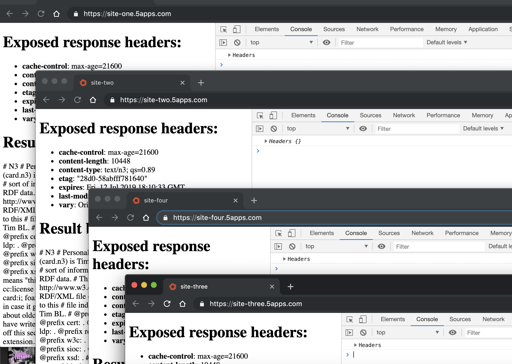
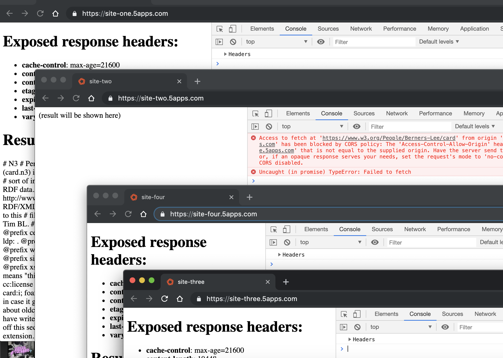
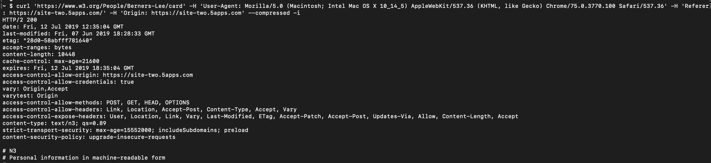
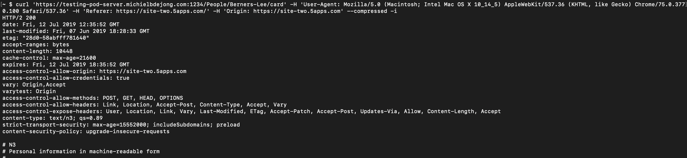

Introduction
I'm a big fan of cross-origin backends for progressive web apps. They require CORS headers on their HTTP responses, and I've had my fair share of fiddling with those at the Unhosted web apps project, then at Mozilla's Firefox OS project, and currently at the Solid project, as an employee of inrupt. When I first read about this bug in in the Solid docs, I found it hard to believe that this would really be a browser bug, but I've since seen it with my own eyes, and so will you now!
Steps to reproduce
- Click: site one
- Click: site two
- Click: site three
- Click: site four
Expected behaviour
You would expect all four to work:

Actual behaviour
The second one fails:

This affects Chrome and Firefox, on both Mac and Windows, but not Safari on Mac.
Analysis so far
The intriguing thing is, after several hours of diggin, I still don't actually know exactly what is triggering this. Site-one and site-two retrieve Tim Berners-Lee's FOAF profile, whereas site-three and site-four retrieve my seemingly identical copy of it. Both are served over HTTP/2, with exactly the same HTTP headers, and the URLs only differ in the domain name part (I also tried putting it on port 443 instead of port 1234, no difference). The only difference I can think of is that www.w3.org uses HSTS and my testing server doesn't:


The thing that's going wrong is that in the site-one/site-two case, the browser ignores the Vary: Origin header, and caches the result from site-one in the http cache, including the Access-Control-Allow-Origin: https://site-one.5apps.com header. Therefore, the cross-origin request from site-two.5apps.com is blocked. In this case, doing just a GET, this could be worked around using Access-Control-Allow-Origin: *, but for POST and other verbs, the server needs to echo the origin from the HTTP request's Origin there. For some mysterious reason, the same thing does not go wrong for site-three/site-four! :)